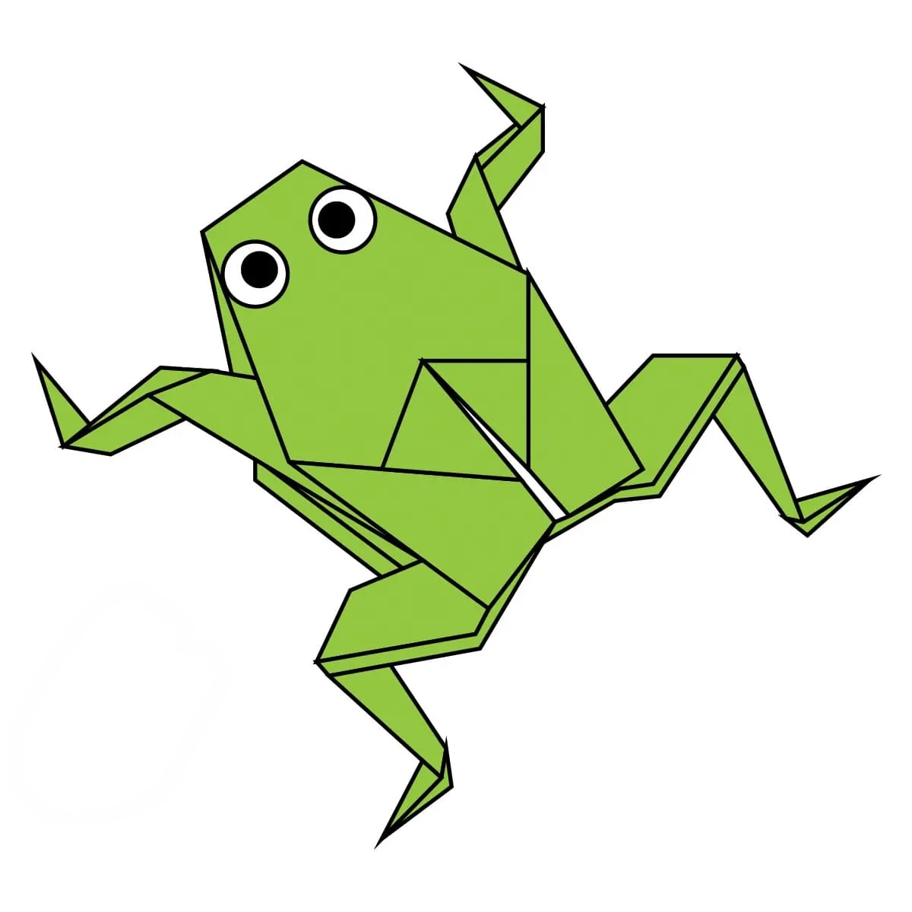

Camel
- Camel's ears are furry
- Camel can move easily across the sand because of its specially designed feet
- When they find water, they will drink as much as possible.

Chameleon
- Chameleon are reptiles that are part of the iguana suborder.
- Changing skin color is an important part of communication among chameleons
- Most chameleons have a prehensile tail that they use to wrap around tree branches

Pigeons
- Pigeons are incredibly complex and intelligent animals
- Pigeons are renowned for their outstanding navigational abilities
- Pigeons have excellent hearing abilities.

Panda
- Giant pandas are good at climbing trees and can also swim
- Pandas go from pink to white and black (or brown)
- Pandas are "lazy" — eating and sleeping make their day

Bear
- Bears have two layers of fur.
- Bears live as long as 30 years in the wild.
- Bears can run up to 40 miles per hour, fast enough to catch a running horse.

Cicada
- Cicadas have one of the longest insect lifespans.
- Their lengthy life cycles may help them evade predators.
- They can buzz louder than a lawnmower.

Frog
- Frogs are carnivores.Frogs are carnivores.
- The life cycle of a frog consists of three stages: egg, larva, and adult.
- Each species of frog has a unique call.
Dog
- Dogs can smell disease.
- Dogs’ noses can sense heat/thermal radiation.
- All puppies are born deaf.